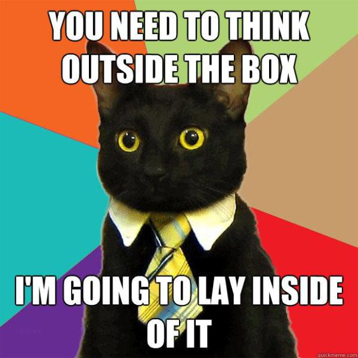
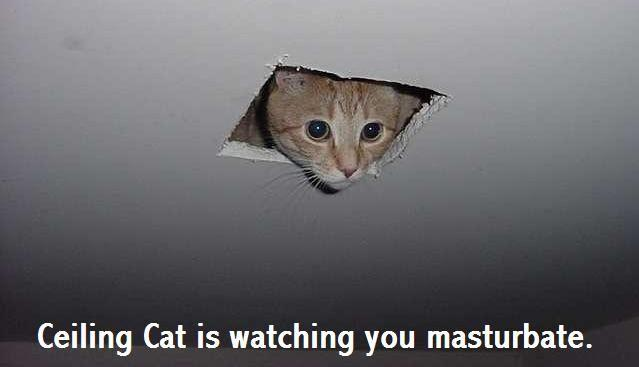
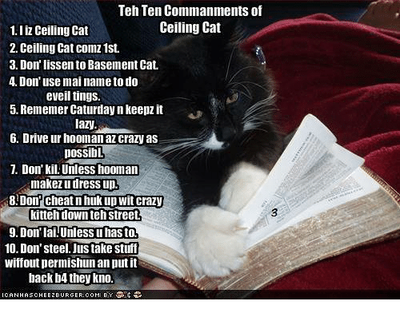
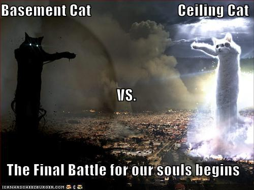

lolspeak started in the mid 00s with the rise of the lolcat meme
it probably started on 4chan (lk most internet garbage) but it got rlly popular in 2007 after the website icanhaz.cheezburger was launched which was basically a huge collection of lolcat memes in fact it was so popular that there were a lot of offshoots lk i has a hotdog (a dog version)
humans have basically always added characterizations and stuff to animals (remember aesop) but this time it’s on The Web
basically lolspeak is an imitation of how the internet collectively decided cats would speak in english m calka a professor from ohio university claims that “the closest approximation would be to imagine English put through an automatic translator into another language and then translated back and spelled phonetically” but i would consider it closer an extension of babyspeak which is lk how ppl often talk to their pets
the early 2000s were also when memes shifted formats from the demotivational poster to the image macro style which was basically the meme style where impact text would b placed on the top and bottom of the image
speaking of impact it probably became the most notorious typeface up until comic sans but we’ll get into that later anyway impact is a rlly standardized typeface and its p thick which is gr8 fr legibility. it got popular as a meme font bc when advice animals and those types of memes were popular they were usually made on a generative website that would automatically place text n they just happened to have impact in their font options. it happens to b really good fr memes bc it is extremely legible n has this casual connotation
maybe the most iconic of this era was the advice animal which was actually a lot of diff memes but all of them featured an animal centered in the image offering specific kinds of advice ex includes advice dog who only gave bad advice insanity wolf who gave exaggerated angry advice and business cat whose content would usually b puns combining cats behavior n business
grammar
so lolspeak is a much broader language than leetspeak which was probs bc of its extended reach n association w popular memes
altho rlly fluid there is a clear grammar system n rules which some ppl might consider prescriptivist but we will talk abt that later anyway lolspeak is above all a playful language it’s rlly clear that the users kno what is proper english n what isnt n they take that idea to the extreme
lolspeak tends to ignore or invert traditional grammar structures most commonly the lack of agreement between pronouns and auxiliary verbs (i can has vs i can have) users actively will choose the less grammatical one v popular swap was ‘eated’ instead of ‘ate’
misspelling was a huge component of lolspeak bc it sort of makes sense that a mistranslation of english thru an cat would make mistakes ‘the’ is probs most common w ‘teh’ which was also used in leet but appears a lot more in lol but lol adds ‘da’ as well altho less frequently which adds variety and tonality to sentences

speaking of taken from leetspeak there were actually a bunch of things that made the jump between languages. altho not rlly used the same way the number fr letter substitution also was present in lol altho this time it was more used as an intentional misspelling lk w00t which was a popular web interjection (wooh!)
similar to the number for letter replacements there r a number of v common letter fr letter replacements in lol. ‘z’ fr ‘s’ is probs most common lk ‘friendz’ it also adds to the vocal tone of lolspeak lk even tho ‘z’ n ‘s’ r pronounced similarly the tonality when reading a lolspeak phrase is diff. later in this book we’ll get into how misspellings affect tonality in mainstream webspeak but it’s good to realize that the idea surfaced in lolspeak
where in leet capitalization was more stylistic in lol it rlly starts being seen as an emphatic expression altho in image macros impact text was usually in all caps so this was only really the case in more lengthy writing n non memes
it’s p common to drop a ‘g’ in ‘-ing’ to the point where it has a linguistic name (g-dropping). it’s known fr bein a part of southern accents. lol also does this but it’s a stylistic choice n doesn’t add the apostrophe to the end of the word lk traditional writing
again lolspeak’s grammar structure was rlly based on the style of being ungrammatical lk to excess. double negatives, second suffixes (eateded), misspelling, etc were all commonly used. there was clearly a lot of fluidity but all fr the sake of rlly clearly bein ungrammatical
aside
lolcats was actually probs the first memes i experienced as a young web user
i remember rlly clearly being in middle school in my computer class scrolling page after page of icanhazcheezburger instead of practicing my typing skills lol
at this point meme language didnt rlly enter my vocabulary i would say that didnt rlly happen until i was in late high school after joining the worst possible group of nerdy gamer boys lol they were rlly mean but at least i would have a basement to hang out in n watch some1 play video games
anyway lolcats rlly were a great introduction to meme culture bc they were generally innocent esp since they were the immediate successor to the demotivational poster meme style which was rooted in the dry sarcasm n humor of monty python n nerd humor generally
also lk who doesnt lk cute pics of cats doin dumb shit w a rlly bad cat pun on top
legacy
as lolspeak became more popular around 2007 ppl began contributing to a crowdsourced translation of the bible altho a rather large undertaking it is basically completed a couple things of note:
there were a number of phrase replacements to fit in the lolcat continuum including ‘ceiling cat’ for god ‘basement cat’ for satan people are ‘kittehs’ gifts are ‘cheezburgers’ etc
it’s also important to note the collectivized nature of this undertaking it really informs the culture of the internet that so many users were willing to contribute to an ultimately useless project (aside from the gratification n fun of doing it) we see this collective action in language development all the time but this is a really cool instance of a solid project
similar to a number of different memes lolspeak was implemented into a coding language called lolcode in 2007
so basically after the lolcat meme ended lolspeak also died but there are def ripples in web lingo since then
the doge meme which was made in 2013 but reached peak popularity in 2017 is probs the spiritual successor to lolspeak
doge is kind of a dog version of lolspeak but instead it was tied to this specific photoset of shiba inu looking at the camera. ppl interpreted the dog as being incredulous or feigning surprise n the humor is basically dramatic sarcasm combined w the lolspeak staple of infantilizing how animals talk

doge also lifted the mixed grammar rules except it focused more on verbs, always removing the action of ‘-ing’ and adding a modifier that doesn’t fit the verb lk ‘much run’ there was also a clear emphasis on being ungrammatical lk if a combos of modifier and verb werent mixed enough ppl would call it out as not real doge speak (this is maybe prescriptivism)
doge is also a big deal meme wise bc similar to when memes are adapted to coding languages in the last few years they also get turned into cryptocurrencies in this case dogecoin. doge was also commercialized for a while before the internet abandoned it (usually ppl hate it as soon as a meme starts being corporatized)